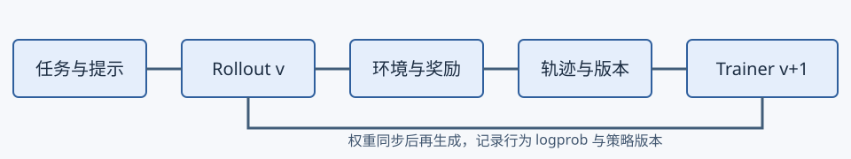
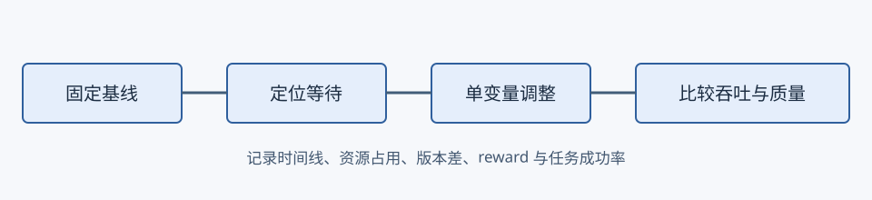
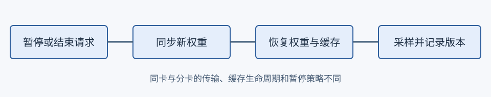

00全景：吞吐和质量一起观察
异步训练重叠 rollout 与参数更新，但旧策略采样会带来策略滞后。设备利用率、有效 token 吞吐、任务成功率、reward 与策略版本差应同时记录。

这张图怎么读
重点是轨迹上的版本与行为 logprob：它们连接生成时的策略和更新时的策略，不能仅凭设备时间线判断训练质量。
叙事怎么说
设备越忙，训练越快。
证据是什么
异步同时改变资源利用率与采样策略的新鲜度，必须测量两者。
本站判断比较应以固定任务质量下的时间与成本为目标。
01910B 案例：找到等待的那一侧
作者报告 verl 指南的 Qwen3-30B 案例中，减少 rollout 资源后端到端吞吐约提升 25%；Qwen3.5-35B 的 staleness 增大后，等待改善趋缓而 reward 波动增大；Qwen3-Omni 在显存允许时提高 PPO token 预算，吞吐约提升 10%。指南未披露完整配置，因此这些数字是案例而不是可直接复现的承诺。

这张图怎么读
先判断 trainer 还是 rollout 在等待，再选择调整项；不要同时改变资源、数据和算法。
叙事怎么说
增加 rollout 设备就会提高吞吐。
证据是什么
当 rollout 已在等待 trainer，更多生成资源可能增加空闲；比例取决于工作负载。
本站判断保留同预算基线及评测，检查长尾、校验阶段与设备利用。
02同卡、分卡与轨迹契约
vLLM-Ascend RL 文档描述：同卡可用 sleep mode 释放显存并用 IPC 传权重，分卡可暂停生成并用 HCCL 更新。sleep level 2 丢弃权重和 KV；恢复时先恢复权重分配、加载权重，再恢复 KV。额外清理可能需要重建通信组和重捕获图。

这张图怎么读
权重切换前后应能辨认轨迹版本。文档提示 keep 暂停模式可能让请求跨越权重版本，严格版本边界需选择合适策略并验证。
轨迹至少保留 token ID、行为 logprob、采样参数、模型版本、任务和奖励版本。支持的 MoE 工作流还可记录专家路由；Sampling Mask 可保存采样支持集。生成端记录并不自动保证训练端消费正确。
| 维度 | 同卡 | 分卡 |
|---|---|---|
| 显存 | sleep mode 释放与恢复 | 分别规划训练和采样资源 |
| 权重传输 | IPC | HCCL |
| 核验重点 | 恢复顺序、缓存与图 | 在途请求、同步边界与版本 |
03两条研究线索
GMC-GRPO 研究异步轨迹的偏差与方差，作者报告较大延迟下的稳健性改善；Agentic-OPD 利用同次 RL 训练中不同 checkpoint 的互补能力，选择教师恢复学生遗漏能力。两者均是预印本，不是本站的昇腾实测。
04最小实验记录
先固定模型、数据和评测，运行同步基线，再单独改变异步配置。记录芯片与卡数、固件及软件版本、模型数据修订、种子、并行策略、长度分布、训练步数、显存、时间线、有效吞吐、reward 和任务成功率；保留原始日志、失败运行及成本。没有真实数据时，不应将模拟曲线标作实验。
verl 指南未提供完整运行配置；各软件能力和支持矩阵随版本变化。本站未独立复现所引实验，也没有新增 910B 实验曲线。